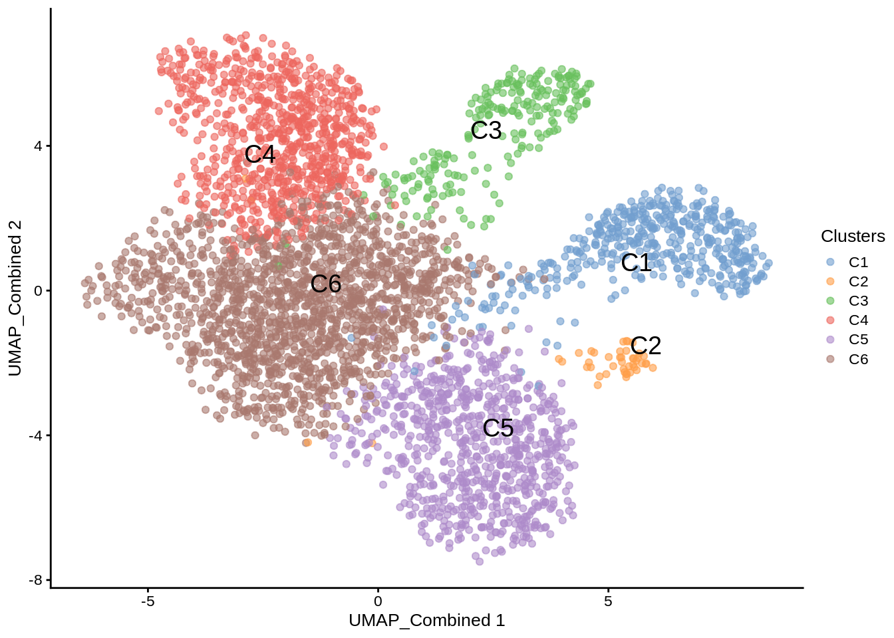

3 Basic workflow with MultiAssayExperiment
In this chapter, we illustrate the epiregulon workflow starting from data in the form of SingleCellExperiment objects using the correlation weight estimation method.
This tutorial demonstrates the basic functions of epiregulon, using the reprogram-seq dataset which can be downloaded from the scMultiome package. In this example, prostate cancer cells (LNCaP) were infected in separate wells with viruses encoding 4 transcription factors (NKX2-1, GATA6, FOXA1 and FOXA2) and a positive control (mNeonGreen) before pooling. The identity of the infected transcription factors was tracked through cell hashing (available in the field hash_assignment of the colData) and serves as the ground truth.
3.1 Data preparation
Prior to using epiregulon, single cell preprocessing needs to performed by user’s favorite methods. The following components are required:
1. Peak matrix from scATAC-seq containing the chromatin accessibility information
2. Gene expression matrix from either paired or unpaired scRNA-seq. RNA-seq integration needs to be performed for unpaired dataset.
3. Dimensionality reduction matrix from with either single modalities or joint scRNA-seq and scATAC-seq
# load the MAE object
library(scMultiome)
library(epiregulon)
mae <- scMultiome::reprogramSeq()
# extract peak matrix
PeakMatrix <- mae[["PeakMatrix"]]
# extract expression matrix
GeneExpressionMatrix <- mae[["GeneExpressionMatrix"]]
rownames(GeneExpressionMatrix) <- rowData(GeneExpressionMatrix)$name
# define the order of hash_assigment
GeneExpressionMatrix$hash_assignment <- factor(as.character(GeneExpressionMatrix$hash_assignment),
levels = c("HTO10_GATA6_UTR", "HTO2_GATA6_v2", "HTO8_NKX2.1_UTR", "HTO3_NKX2.1_v2",
"HTO1_FOXA2_v2", "HTO4_mFOXA1_v2", "HTO6_hFOXA1_UTR", "HTO5_NeonG_v2"))
# extract dimensional reduction matrix
reducedDimMatrix <- reducedDim(mae[['TileMatrix500']], "LSI_ATAC")
# transfer UMAP_combined from TileMatrix to GeneExpressionMatrix
reducedDim(GeneExpressionMatrix, "UMAP_Combined") <- reducedDim(mae[['TileMatrix500']], "UMAP_Combined")Visualize singleCellExperiment by UMAP
scater::plotReducedDim(GeneExpressionMatrix,
dimred = "UMAP_Combined",
text_by = "Clusters",
colour_by = "Clusters")
3.2 Quick start
3.2.1 Retrieve bulk TF ChIP-seq binding sites
First, we retrieve a GRangesList object containing the binding sites of all the transcription factors and co-regulators. These binding sites are derived from bulk ChIP-seq data in the ChIP-Atlas and ENCODE databases. For the same transcription factor, multiple ChIP-seq files from different cell lines or tissues are merged. For further information on how these peaks are derived, please refer to ?epiregulon::getTFMotifInfo. Currently, human genomes hg19 and hg38 and mouse mm10 are supported.
## see ?scMultiome and browseVignettes('scMultiome') for documentation## loading from cache## GRangesList object of length 1558:
## $AEBP2
## GRanges object with 2700 ranges and 0 metadata columns:
## seqnames ranges strand
## <Rle> <IRanges> <Rle>
## [1] chr1 9792-10446 *
## [2] chr1 942105-942400 *
## [3] chr1 984486-984781 *
## [4] chr1 3068932-3069282 *
## [5] chr1 3069411-3069950 *
## ... ... ... ...
## [2696] chrY 8465261-8465730 *
## [2697] chrY 11721744-11722260 *
## [2698] chrY 11747448-11747964 *
## [2699] chrY 19302661-19303134 *
## [2700] chrY 19985662-19985982 *
## -------
## seqinfo: 25 sequences from an unspecified genome; no seqlengths
##
## ...
## <1557 more elements>3.2.2 Link ATAC-seq peaks to target genes
Next, we try to link ATAC-seq peaks to their putative target genes. We assign a peak to a gene within a size window (default ±250kb) if the chromatin accessibility of the peak and expression of the target genes are highly correlated (default threshold 0.5). To compute correlations, we first create cell aggregates by performing k-means clustering on the reduced dimensionality matrix. Then we aggregate the counts of the gene expression and peak matrix and average across the number of cells. Correlations are computed on the averaged gene expression and chromatin accessibility.
If cluster labels are provided, peak-to-gene correlations are computed on all the cells and for each cluster. Peak-to-gene links are retained as long as any of the correlations pass the threshold; the longer list of peak-to-gene links capture both inter- and intra-cluster variations.
set.seed(1010)
p2g <- calculateP2G(peakMatrix = PeakMatrix,
expMatrix = GeneExpressionMatrix,
reducedDim = reducedDimMatrix,
exp_assay = "normalizedCounts",
peak_assay = "counts")## Using epiregulon to compute peak to gene links...## performing k means clustering to form metacells## Computing correlation## DataFrame with 7892 rows and 8 columns
## idxATAC chr start end idxRNA target Correlation
## <integer> <character> <integer> <integer> <integer> <array> <matrix>
## 1 37 chr1 1020509 1021009 22 AL645608.4 0.592745
## 2 39 chr1 1039811 1040311 33 AGRN 0.523777
## 3 42 chr1 1053517 1054017 33 AGRN 0.521471
## 4 86 chr1 1290083 1290583 58 DVL1 0.524540
## 5 104 chr1 1343943 1344443 66 AL391244.1 0.515194
## ... ... ... ... ... ... ... ...
## 7888 126535 chrX 154368842 154369342 36389 FLNA 0.852869
## 7889 126536 chrX 154369373 154369873 36389 FLNA 0.828660
## 7890 126537 chrX 154370531 154371031 36389 FLNA 0.573066
## 7891 126541 chrX 154374945 154375445 36389 FLNA 0.572236
## 7892 126590 chrX 155228844 155229344 36426 CLIC2 0.527470
## distance
## <integer>
## 1 106338
## 2 19691
## 3 33397
## 4 58527
## 5 75800
## ... ...
## 7888 1878
## 7889 1347
## 7890 189
## 7891 3723
## 7892 1052683.2.3 Add TF motif binding to peaks
The next step is to add the TF binding information by overlapping regions of the peak matrix with the bulk chip-seq database. The output is a data frame object with three columns:
idxATAC- index of the peak in the peak matrixidxTF- index in the gene expression matrix corresponding to the transcription factortf- name of the transcription factor
## Computing overlap...## Success!## idxATAC idxTF tf
## 9312 37 4 AGO1
## 9313 37 7 ARID1B
## 9314 37 8 ARID2
## 9315 37 18 ATF3
## 9316 37 21 ATF7
## 9317 37 23 BACH13.2.4 Generate regulons
A DataFrame, representing the inferred regulons, is then generated. The DataFrame consists of ten columns:
idxATAC- index of the peak in the peak matrixchr- chromosome numberstart- start position of the peakend- end position of the peakidxRNA- index in the gene expression matrix corresponding to the target genetarget- name of the target genedistance- distance between the transcription start site of the target gene and the middle of the peakidxTF- index in the gene expression matrix corresponding to the transcription factortf- name of the transcription factorcorr- correlation between target gene expression and the chromatin accessibility at the peak. if cluster labels are provided, this field is a matrix with columns names corresponding to correlation across all cells and for each of the clusters.
## DataFrame with 743656 rows and 10 columns
## idxATAC chr start end idxRNA target
## <integer> <character> <integer> <integer> <integer> <character>
## 1 37 chr1 1020509 1021009 22 AL645608.4
## 2 37 chr1 1020509 1021009 22 AL645608.4
## 3 37 chr1 1020509 1021009 22 AL645608.4
## 4 37 chr1 1020509 1021009 22 AL645608.4
## 5 37 chr1 1020509 1021009 22 AL645608.4
## ... ... ... ... ... ... ...
## 743652 126541 chrX 154374945 154375445 36389 FLNA
## 743653 126541 chrX 154374945 154375445 36389 FLNA
## 743654 126590 chrX 155228844 155229344 36426 CLIC2
## 743655 126590 chrX 155228844 155229344 36426 CLIC2
## 743656 126590 chrX 155228844 155229344 36426 CLIC2
## distance idxTF tf corr
## <integer> <integer> <character> <matrix>
## 1 106338 4 AGO1 0.592745
## 2 106338 7 ARID1B 0.592745
## 3 106338 8 ARID2 0.592745
## 4 106338 18 ATF3 0.592745
## 5 106338 21 ATF7 0.592745
## ... ... ... ... ...
## 743652 3723 1492 ZNF692 0.572236
## 743653 3723 1557 ZXDB 0.572236
## 743654 105268 114 FOXA1 0.527470
## 743655 105268 128 GATA2 0.527470
## 743656 105268 952 SUMO2 0.5274703.2.5 Network pruning (highly recommended)
Epiregulon prunes the network by performing tests of independence on the observed number of cells jointly expressing transcription factor (TF), regulatory element (RE) and target gene (TG) vs the expected number of cells if TF/RE and TG are independently expressed. The users can choose between two tests, the binomial test and the chi-square test. In the binomial test, the expected probability is P(TF, RE) * P(TG), and the number of trials is the total number of cells, and the observed successes is the number of cells jointly expressing all three elements. In the chi-square test, the expected probability for having all 3 elements active is also P(TF, RE) * P(TG) and the probability otherwise is 1- P(TF, RE) * P(TG). The observed cell count for the category of “active TF” is the number of cells jointly expressing all three elements, and the cell count for the inactive category is n - n_triple.
We calculate cluster-specific p-values if users supply cluster labels. This is useful if we are interested in cluster-specific networks. The pruned regulons can then be used to visualize differential networks for transcription factors of interest.
pruned.regulon <- pruneRegulon(expMatrix = GeneExpressionMatrix,
exp_assay = "normalizedCounts",
peakMatrix = PeakMatrix,
peak_assay = "counts",
test = "chi.sq",
regulon[regulon$tf %in% c("NKX2-1","GATA6","FOXA1","FOXA2", "AR"),],
clusters = GeneExpressionMatrix$Clusters,
prune_value = "pval",
regulon_cutoff = 0.05
)
pruned.regulon3.2.6 Add Weights
While the pruneRegulon function provides statistics on the joint occurrence of TF-RE-TG, we would like to further estimate the strength of regulation. Biologically, this can be interpreted as the magnitude of gene expression changes induced by transcription factor activity. Epiregulon estimates the regulatory potential using one of the three measures: 1) correlation between TF and target gene expression, 2) mutual information between the TF and target gene expression and 3) Wilcoxon test statistics of target gene expression in cells jointly expressing all 3 elements vs cells that do not.
Two of the measures (correlation and Wilcoxon statistics) give both the magnitude and directionality of changes whereas mutual information is always positive. The correlation and mutual information statistics are computed on pseudobulks aggregated by user-supplied cluster labels, whereas the Wilcoxon method groups cells into two categories: 1) the active category of cells jointly expressing TF, RE and TG and 2) the inactive category consisting of the remaining cells.
We calculate cluster-specific weights if users supply cluster labels.
3.2.7 (Optional) Annotate with TF motifs
So far the gene regulatory network was constructed from TF ChIP-seq exclusively. Some users would prefer to further annotate regulatory elements with the presence of motifs. We provide an option to annotate peaks with motifs from the Cisbp database. If no motifs are present for this particular factor (as in the case of co-factors or chromatin modifiers), we return NA. If motifs are available for a factor and the RE contains a motif, we return 1. If motifs are available and the RE does not contain a motif, we return 0.
regulon.w.motif <- addMotifScore(regulon = regulon.w,
peaks = rowRanges(PeakMatrix),
species = "human",
genome = "hg38")
# if desired, set weight to 0 if no motif is found
regulon.w.motif$weight[regulon.w.motif$motif == 0] <- 0
regulon.w.motif## DataFrame with 3290 rows and 15 columns
## idxATAC chr start end idxRNA target distance
## <integer> <character> <integer> <integer> <integer> <character> <integer>
## 1 86 chr1 1290083 1290583 58 DVL1 58527
## 2 288 chr1 2526365 2526865 108 AL139246.1 33107
## 3 640 chr1 7988538 7989038 208 TNFRSF9 47672
## 4 654 chr1 8040536 8041036 212 ERRFI1 24903
## 5 787 chr1 9290024 9290524 229 SPSB1 2368
## ... ... ... ... ... ... ... ...
## 3286 120296 chr9 36118633 36119133 34311 CLTA 71721
## 3287 121835 chr9 98192900 98193400 34702 CORO2A 20016
## 3288 122254 chr9 108991440 108991940 34784 CTNNAL1 27885
## 3289 122461 chr9 113174265 113174765 34825 SLC31A1 46777
## 3290 123380 chr9 128635245 128635745 35034 SPTAN1 82687
## idxTF tf corr pval
## <integer> <character> <matrix> <matrix>
## 1 490 AR 0.524540 1.91265e-03:0.50585953:0.000249278:...
## 2 490 AR 0.602193 5.02384e-02:0.00249757:1.000000000:...
## 3 490 AR 0.875387 7.53206e-09:0.15249790:1.000000000:...
## 4 490 AR 0.550906 9.18676e-02:0.76535176:1.000000000:...
## 5 490 AR 0.891738 9.64012e-13:0.51358560:1.000000000:...
## ... ... ... ... ...
## 3286 807 NKX2-1 0.522644 0.035831331:1:1:...
## 3287 807 NKX2-1 0.541195 0.000419607:1:1:...
## 3288 807 NKX2-1 0.872888 0.013099814:1:1:...
## 3289 807 NKX2-1 0.683659 0.045120208:1:1:...
## 3290 807 NKX2-1 0.745530 0.045120208:1:1:...
## stats qval weight
## <matrix> <matrix> <matrix>
## 1 9.63153:0.4426222:13.4176:... 1.00000e+00:1:1:... 0:0:0:...
## 2 3.83348:9.1423696: 0.0000:... 1.00000e+00:1:1:... 0:0:0:...
## 3 33.39232:2.0470852: 0.0000:... 1.24761e-04:1:1:... 0:0:0:...
## 4 2.84134:0.0890786: 0.0000:... 1.00000e+00:1:1:... 0:0:0:...
## 5 50.91607:0.4267549: 0.0000:... 1.60836e-08:1:1:... 0:0:0:...
## ... ... ... ...
## 3286 4.40511:0:0:... 1:1:1:... 0.0343753:0:0:...
## 3287 12.44280:0:0:... 1:1:1:... 0.0000000:0:0:...
## 3288 6.15558:0:0:... 1:1:1:... 0.0000000:0:0:...
## 3289 4.01414:0:0:... 1:1:1:... 0.0000000:0:0:...
## 3290 4.01414:0:0:... 1:1:1:... 0.0000000:0:0:...
## motif
## <numeric>
## 1 0
## 2 0
## 3 0
## 4 0
## 5 0
## ... ...
## 3286 1
## 3287 0
## 3288 0
## 3289 0
## 3290 03.2.8 Calculate TF activity
Finally, the activities for a specific TF in each cell are computed by averaging expressions of target genes linked to the TF weighted by the test statistics of choice, chosen from either correlation, mutual information or the Wilcoxon test statistics. \[y=\frac{1}{n}\sum_{i=1}^{n} x_i * weights_i\] where \(y\) is the activity of a TF for a cell, \(n\) is the total number of targets for a TF, \(x_i\) is the log count expression of target \(i\) where \(i\) in {1,2,…,n} and \(weights_i\) is the weight of TF - target \(i\)
score.combine <- calculateActivity(expMatrix = GeneExpressionMatrix,
regulon = regulon.w,
mode = "weight",
method = "weightedMean",
exp_assay = "normalizedCounts",
normalize = FALSE)## calculating TF activity from regulon using weightedmean## Warning in calculateActivity(expMatrix = GeneExpressionMatrix, regulon =
## regulon.w, : The weight column contains multiple subcolumns but no cluster
## information was provided. Using first column to compute activity...## aggregating regulons...## creating weight matrix...## calculating activity scores...## normalize by the number of targets...## 5 x 5 sparse Matrix of class "dgCMatrix"
## reprogram#TTAGGAACAAGGTACG-1 reprogram#GAGCGGTCAACCTGGT-1
## AR 0.043408741 0.06010198
## FOXA1 0.035260181 0.04408534
## FOXA2 0.008868738 0.04479888
## GATA6 0.033885727 0.13969050
## NKX2-1 0.065298024 0.02791934
## reprogram#TTATAGCCACCCTCAC-1 reprogram#TGGTGATTCCTGTTCA-1
## AR 0.02734512 0.03422265
## FOXA1 0.01708987 0.01827346
## FOXA2 0.01153884 0.01998275
## GATA6 0.01667011 0.01904236
## NKX2-1 0.01410221 0.01023911
## reprogram#TCGGTTCTCACTAGGT-1
## AR 0.04019227
## FOXA1 0.03426071
## FOXA2 0.01368200
## GATA6 0.02905760
## NKX2-1 0.053652393.3 Session Info
## R version 4.4.0 (2024-04-24)
## Platform: x86_64-pc-linux-gnu
## Running under: Red Hat Enterprise Linux 8.6 (Ootpa)
##
## Matrix products: default
## BLAS/LAPACK: /apps/rocs/2020.08/cascadelake/software/OpenBLAS/0.3.9-GCC-9.3.0/lib/libopenblas_skylakexp-r0.3.9.so; LAPACK version 3.9.0
##
## locale:
## [1] LC_CTYPE=en_US.UTF-8 LC_NUMERIC=C
## [3] LC_TIME=en_US.UTF-8 LC_COLLATE=en_US.UTF-8
## [5] LC_MONETARY=en_US.UTF-8 LC_MESSAGES=en_US.UTF-8
## [7] LC_PAPER=en_US.UTF-8 LC_NAME=C
## [9] LC_ADDRESS=C LC_TELEPHONE=C
## [11] LC_MEASUREMENT=en_US.UTF-8 LC_IDENTIFICATION=C
##
## time zone: America/Los_Angeles
## tzcode source: system (glibc)
##
## attached base packages:
## [1] stats4 stats graphics grDevices utils datasets methods
## [8] base
##
## other attached packages:
## [1] BSgenome.Hsapiens.UCSC.hg38_1.4.5 BSgenome_1.73.1
## [3] rtracklayer_1.65.0 BiocIO_1.15.2
## [5] Biostrings_2.73.2 XVector_0.45.0
## [7] epiregulon_1.3.4 scMultiome_1.5.7
## [9] SingleCellExperiment_1.27.2 MultiAssayExperiment_1.31.5
## [11] SummarizedExperiment_1.35.4 Biobase_2.65.1
## [13] GenomicRanges_1.57.2 GenomeInfoDb_1.41.2
## [15] IRanges_2.39.2 S4Vectors_0.43.2
## [17] MatrixGenerics_1.17.0 matrixStats_1.4.1
## [19] ExperimentHub_2.13.1 AnnotationHub_3.13.3
## [21] BiocFileCache_2.13.2 dbplyr_2.5.0
## [23] BiocGenerics_0.51.3 BiocStyle_2.33.1
##
## loaded via a namespace (and not attached):
## [1] later_1.3.2 bitops_1.0-9
## [3] filelock_1.0.3 R.oo_1.26.0
## [5] tibble_3.2.1 XML_3.99-0.17
## [7] DirichletMultinomial_1.47.0 lifecycle_1.0.4
## [9] pwalign_1.1.0 edgeR_4.3.19
## [11] processx_3.8.4 lattice_0.22-6
## [13] backports_1.5.0 magrittr_2.0.3
## [15] limma_3.61.12 sass_0.4.9
## [17] rmarkdown_2.28 jquerylib_0.1.4
## [19] yaml_2.3.10 metapod_1.13.0
## [21] cowplot_1.1.3 chromote_0.3.1
## [23] DBI_1.2.3 CNEr_1.41.0
## [25] abind_1.4-8 zlibbioc_1.51.1
## [27] R.utils_2.12.3 purrr_1.0.2
## [29] RCurl_1.98-1.16 pracma_2.4.4
## [31] rappdirs_0.3.3 GenomeInfoDbData_1.2.13
## [33] ggrepel_0.9.6 irlba_2.3.5.1
## [35] seqLogo_1.71.0 annotate_1.83.0
## [37] dqrng_0.4.1 codetools_0.2-20
## [39] DelayedArray_0.31.14 scuttle_1.15.4
## [41] tidyselect_1.2.1 UCSC.utils_1.1.0
## [43] farver_2.1.2 ScaledMatrix_1.13.0
## [45] viridis_0.6.5 GenomicAlignments_1.41.0
## [47] jsonlite_1.8.9 BiocNeighbors_1.99.2
## [49] motifmatchr_1.27.0 scater_1.33.4
## [51] tools_4.4.0 TFMPvalue_0.0.9
## [53] Rcpp_1.0.13 glue_1.8.0
## [55] gridExtra_2.3 SparseArray_1.5.44
## [57] xfun_0.48 websocket_1.4.2
## [59] dplyr_1.1.4 HDF5Array_1.33.8
## [61] withr_3.0.1 BiocManager_1.30.25
## [63] fastmap_1.2.0 rhdf5filters_1.17.0
## [65] bluster_1.15.1 fansi_1.0.6
## [67] caTools_1.18.3 digest_0.6.37
## [69] rsvd_1.0.5 R6_2.5.1
## [71] mime_0.12 colorspace_2.1-1
## [73] GO.db_3.20.0 poweRlaw_0.80.0
## [75] gtools_3.9.5 RSQLite_2.3.7
## [77] R.methodsS3_1.8.2 utf8_1.2.4
## [79] generics_0.1.3 httr_1.4.7
## [81] S4Arrays_1.5.10 TFBSTools_1.43.0
## [83] pkgconfig_2.0.3 gtable_0.3.5
## [85] blob_1.2.4 htmltools_0.5.8.1
## [87] bookdown_0.40 scales_1.3.0
## [89] png_0.1-8 scran_1.33.2
## [91] knitr_1.48 rstudioapi_0.16.0
## [93] tzdb_0.4.0 reshape2_1.4.4
## [95] rjson_0.2.23 checkmate_2.3.2
## [97] curl_5.2.3 cachem_1.1.0
## [99] rhdf5_2.49.0 stringr_1.5.1
## [101] BiocVersion_3.20.0 parallel_4.4.0
## [103] vipor_0.4.7 AnnotationDbi_1.67.0
## [105] restfulr_0.0.15 pillar_1.9.0
## [107] grid_4.4.0 vctrs_0.6.5
## [109] promises_1.3.0 BiocSingular_1.21.4
## [111] beachmat_2.21.6 xtable_1.8-4
## [113] cluster_2.1.6 beeswarm_0.4.0
## [115] evaluate_1.0.1 readr_2.1.5
## [117] cli_3.6.3 locfit_1.5-9.10
## [119] compiler_4.4.0 Rsamtools_2.21.2
## [121] rlang_1.1.4 crayon_1.5.3
## [123] labeling_0.4.3 ps_1.8.0
## [125] plyr_1.8.9 ggbeeswarm_0.7.2
## [127] stringi_1.8.4 viridisLite_0.4.2
## [129] BiocParallel_1.39.0 munsell_0.5.1
## [131] Matrix_1.7-0 hms_1.1.3
## [133] bit64_4.5.2 ggplot2_3.5.1
## [135] Rhdf5lib_1.27.0 KEGGREST_1.45.1
## [137] statmod_1.5.0 highr_0.11
## [139] beachmat.hdf5_1.3.3 igraph_2.0.3
## [141] memoise_2.0.1 bslib_0.8.0
## [143] bit_4.5.0